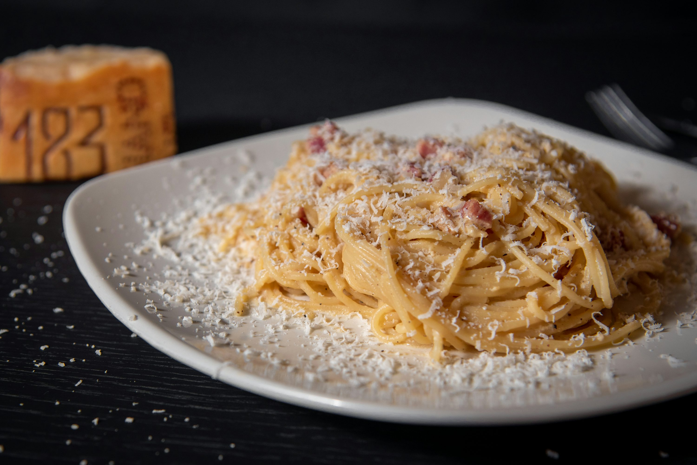
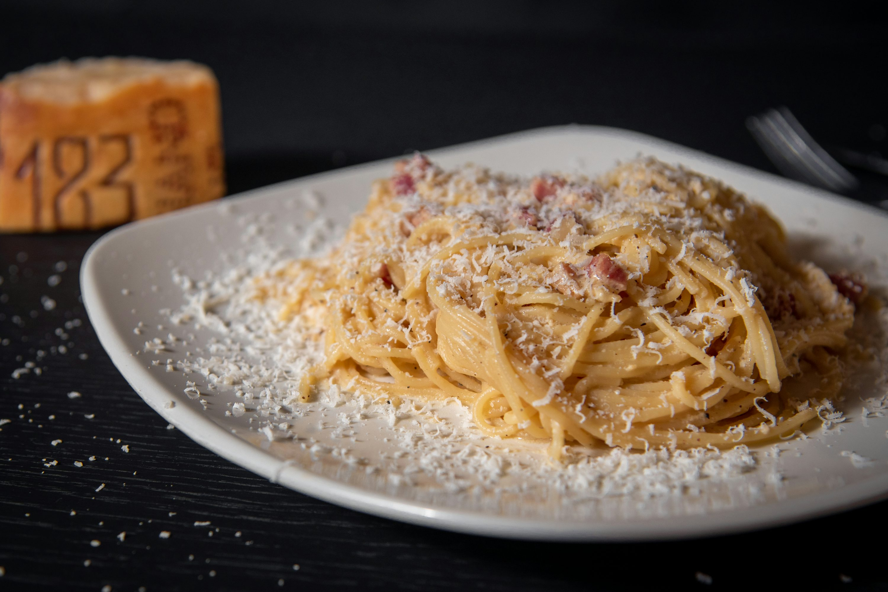

Witaj na stronie penne.pl!
Ta strona jest dla wszystkich miłośników makaronów. Znajdziesz tu informacje o rodzajach makaronów, przepisy, ciekawostki oraz inspiracje do gotowania. Poznaj świat włoskich smaków i odkryj, który makaron stanie się Twoim ulubionym!

 
